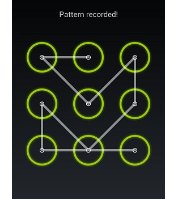

Accessibility personas
When designing we should consider how people with accessibility issues use the website, the following six personas are a starting point for you to give you some context.
Accessibility for Web Design training course available on Yes learning,
https://axa.csod.com/ui/lms-learning-details/app/course/4d971a14-7f1e-52de-ab7b-f8d815d84d5f
Reading materials
https://www.bbc.co.uk/gel/guidelines/how-to-design-for-accessibility
1. Blindness / Visually impair / Colour blindness
Blindness - When users rely on screen readers make sure the semantic tags are organised correctly so when users tab across content they can easily navigate through digital products.
Visually impair - Making sure colour and font size have a good contrast for people visually impair to read.
At AXA we try to aim for WCAG 2.0 level AA requires a contrast ratio of at least 4.5:1 for normal text and 3:1 for large text. https://webaim.org/resources/contrastchecker/
Colour blindness - Do not rely on colour to differentiate the difference, usual other visual cues like icons to help distinguish the different.
400% magnification - Some users use zoom to help them read the content, make sure if user click on a button and something happen on the page, make sure the visual cue are somewhere else on the page at 400% zoom users can't see it.
2. ASD (Autism spectrum disorder)
Design that supports our sensory differences or minimises sensory overload End to end assistance for complex experiences such as navigating an international airport from booking to boarding and beyond. https://uxmastery.com/researching-designing-for-autism/
3. Deaf
Ensure the audio files or video will have transcript for the user to read.
4. Severe arthritis
People with severe arthritis may have problem swiping on the phone. In the example below users with arthritis will find it tricky to manoeuvre around these points. You should give users the option to use a normal pin pad.

5. Vestibular disorder
The vestibular system includes the parts of the inner ear and brain that help control balance and eye movements, when users have vestibular disorder they may feel dizzy when looking at fast flashing images.
6. Dyslexia
Dyslexia is a condition that affects people’s ability to learn, read and spell. It’s estimated that in the UK, around 6.6 million people may have dyslexia, which is around 10% of the population.
“When I read, after a few minutes the pages start to criss-cross and everything becomes distorted. Then after a few minutes of this, everything starts moving up and down. This is when I get tired, and I have to rest my eyes.” - the experience described by a dyslexic user